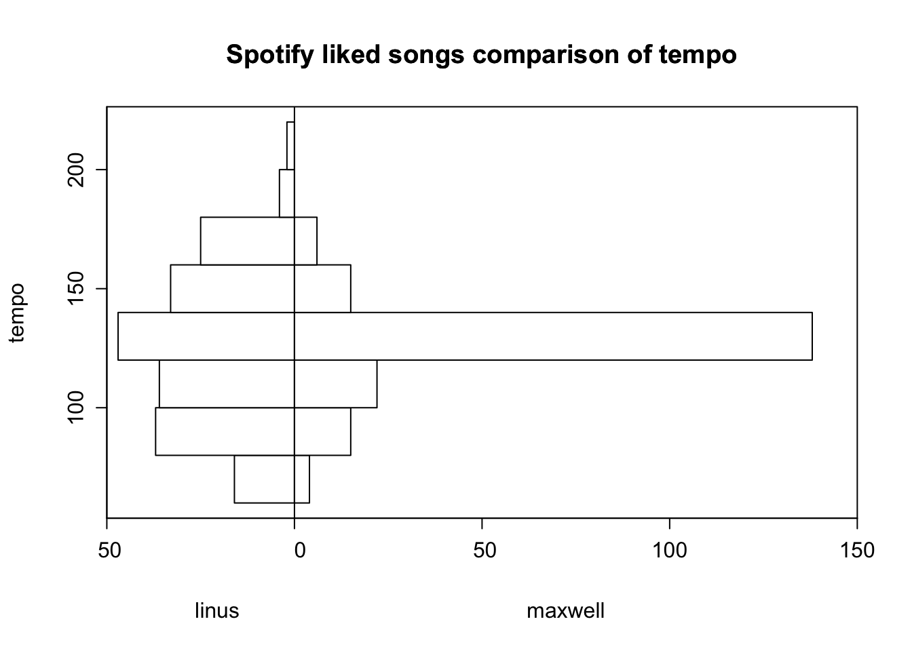
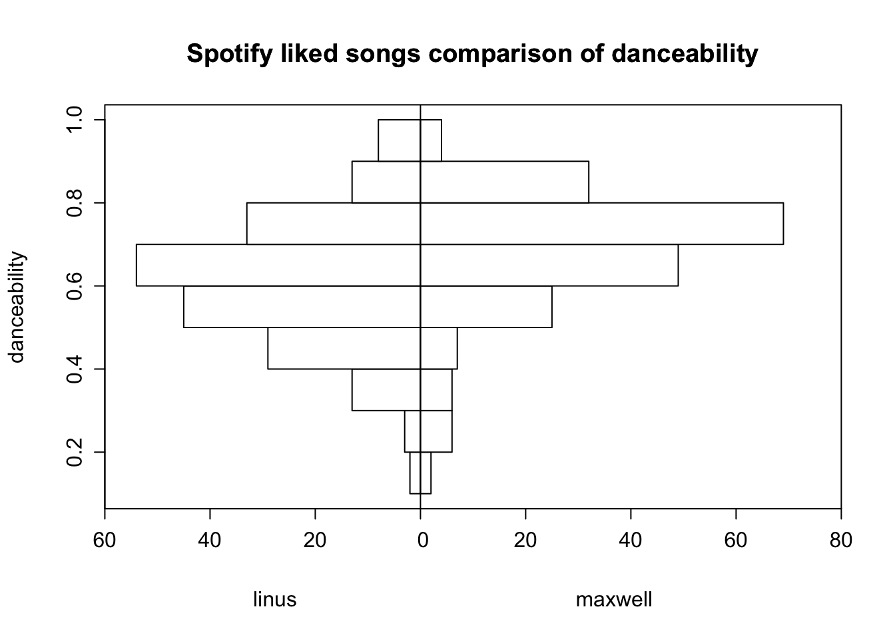
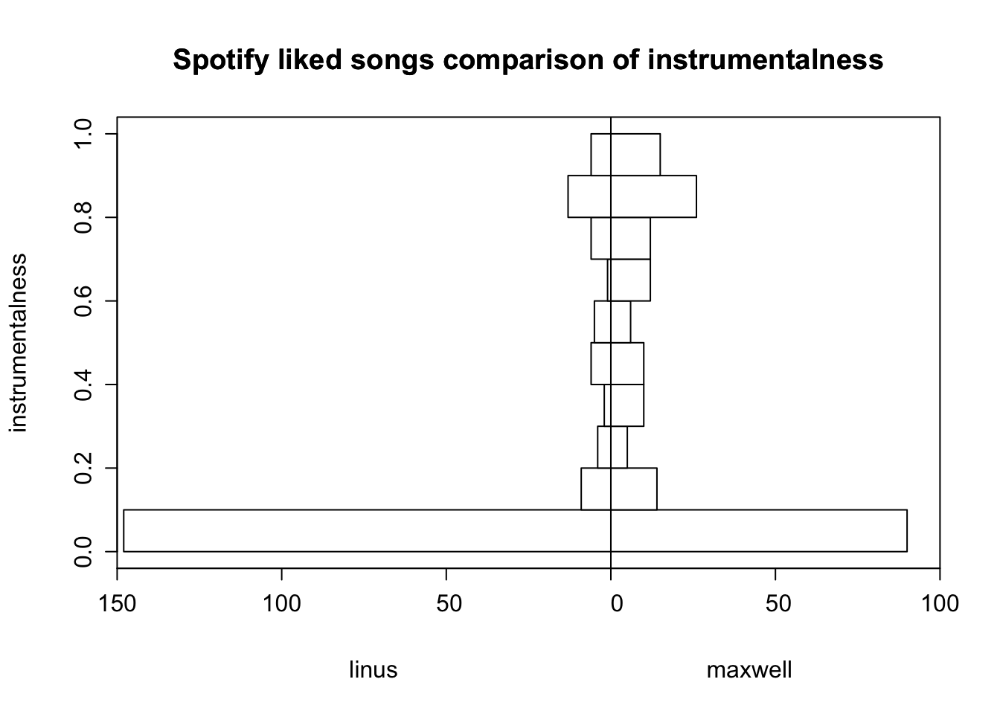
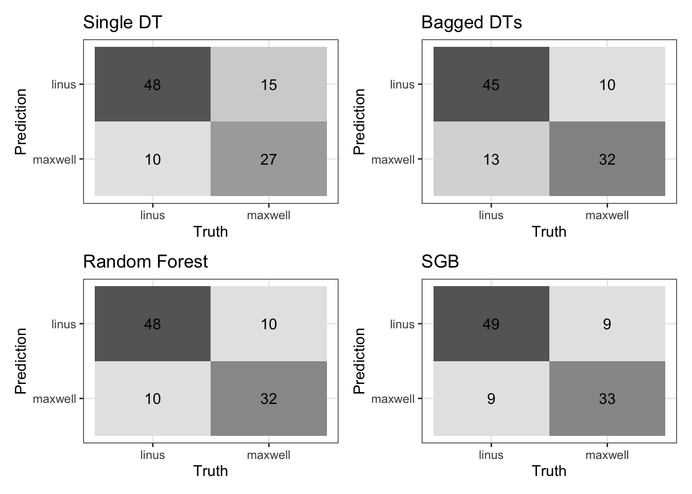
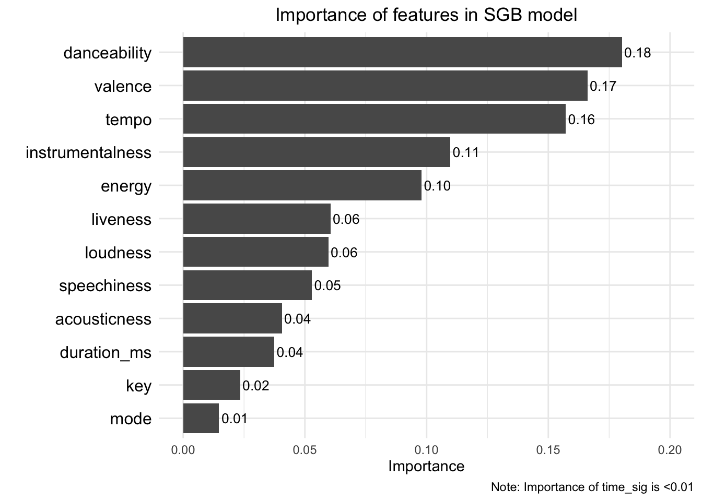

Building predictive user classification models with data from Spotify Web API
In this blog post, I build predictive models using a single decision tree, bagged decision trees, a random forest, and Stochastic Gradient Boosting (SGB) for predicting whether a given song was in my Spotify collection or that of my friend Maxwell. Then, I compare the performance of these four models.
The idea for this blog post comes from a group assignment in my machine learning class. For this assignment, my classmate Maxwell and I started by each using the Spotify Web API to access our recent liked songs data, and we each retrieved data on our 200 most recently liked songs (cite spotify web API). We then trained three decision tree models using 75% of the data (training set) and compared performance based on performance on the remaining 25% (testing set). Now, I’ve decided to go back and also build a model that uses Stochastic Gradient Boosted (SGB) decision trees and also update my model comparisons to include this SGB model.
Setup & data import
Access the Spotify Web API requires having an existing Spotify account and creating a Spotify for Developers account on the Spotify for Developers website. For the purposes of this blog, which focuses on the model-building process, I’ll skip over the API access steps. Instead, I’ll just start by importing the CSV files, which were written using information from the API.
Code
# load packageslibrary(tidyverse)library(tidymodels)library(patchwork)library(baguette)library(vip)# read in my data (CSV that was previously written)linus_tracks <-read.csv(here::here("data", "2024-3-29-post-data", "linus_tracks.csv"))# read in partner datamaxwell_tracks <-read.csv(here::here("data", "2024-3-29-post-data", "maxwell_songs.csv")) %>%mutate(name ="maxwell")# bind my liked songs df with partner dfcombined_tracks <-rbind(linus_tracks, maxwell_tracks) %>%rename(time_sig = time_signature) %>%select(-track.name, -type, -id, -uri, -track_href, -analysis_url) # remove irrelevent columns
Data exploration
Our data set contains 13 features that might be useful for predicting whether a song is in my collection or Maxwell’s. I’ll start by exploring what these 13 features are and how some of them vary between Maxwell’s liked songs and my own. Note that the first 13 columns contain the features we are looking at, and the 14th column contains our outcome variable ‘name’, which is either ‘linus’ or ‘maxwell’ depending on whose collection it is from.
In the following code, we look at a summarized breakdown of each column in the combined tracks data frame and then take a closer look at how Maxwell and I differ in terms of the tempo and danceability of our liked songs.
Code
# look at summary of columnssummary(combined_tracks)
danceability energy key loudness
Min. :0.1440 Min. :0.0844 Min. : 0.00 Min. :-20.149
1st Qu.:0.5570 1st Qu.:0.5350 1st Qu.: 2.00 1st Qu.: -9.371
Median :0.6580 Median :0.6865 Median : 5.00 Median : -7.524
Mean :0.6428 Mean :0.6608 Mean : 5.27 Mean : -8.053
3rd Qu.:0.7642 3rd Qu.:0.8215 3rd Qu.: 8.00 3rd Qu.: -5.899
Max. :0.9730 Max. :0.9840 Max. :11.00 Max. : -2.421
mode speechiness acousticness instrumentalness
Min. :0.0000 Min. :0.02450 Min. :0.0000075 Min. :0.0000000
1st Qu.:0.0000 1st Qu.:0.03610 1st Qu.:0.0121500 1st Qu.:0.0000229
Median :1.0000 Median :0.04685 Median :0.0721000 Median :0.0198500
Mean :0.5975 Mean :0.07576 Mean :0.2068194 Mean :0.2509544
3rd Qu.:1.0000 3rd Qu.:0.07193 3rd Qu.:0.3255000 3rd Qu.:0.5235000
Max. :1.0000 Max. :0.51900 Max. :0.9780000 Max. :0.9670000
liveness valence tempo duration_ms
Min. :0.02990 Min. :0.0322 Min. : 61.85 Min. : 57877
1st Qu.:0.09557 1st Qu.:0.2640 1st Qu.:112.08 1st Qu.:169776
Median :0.11900 Median :0.4530 Median :126.03 Median :210192
Mean :0.16955 Mean :0.4711 Mean :125.03 Mean :219639
3rd Qu.:0.19250 3rd Qu.:0.6843 3rd Qu.:135.12 3rd Qu.:257514
Max. :0.93300 Max. :0.9810 Max. :208.65 Max. :627097
time_sig name
Min. :1.000 Length:400
1st Qu.:4.000 Class :character
Median :4.000 Mode :character
Mean :3.947
3rd Qu.:4.000
Max. :5.000
Code
# compare mean of tempo and danceability for Linus and Maxwellcombined_tracks %>%group_by(name) %>%summarise(mean_tempo =mean(tempo),mean_danceability =mean(danceability),mean_instrumentalness =mean(instrumentalness)) %>%ungroup()
# compare distribution of tempo for Linus and MaxwellHmisc::histbackback(split(combined_tracks$tempo, combined_tracks$name),main ="Spotify liked songs comparison of tempo", ylab ="tempo",xlab =c("linus", "maxwell"))

While the liked songs of Maxwell and I have a very similar mean tempo, the tempo of my liked songs exhibits a significantly wider distribution.
Code
# compare distribution of danceability for Linus and MaxwellHmisc::histbackback(split(combined_tracks$instrumentalness, combined_tracks$name),main ="Spotify liked songs comparison of danceability", ylab ="danceability",xlab =c("linus", "maxwell"))

Maxwell’s collection has a slightly higher mean danceability, and the distribution for his songs is more left skewed compared to mine.
Code
# compare distribution of instrumentalness for Linus and MaxwellHmisc::histbackback(split(combined_tracks$instrumentalness, combined_tracks$name),main ="Spotify liked songs comparison of instrumentalness", ylab ="instrumentalness",xlab =c("linus", "maxwell"))

The mean instrumentalness of Maxwell’s songs is more than twice that of the mean for my collection, and this is reflected in the histogram by the larger proportion of my songs with an instrumentalness of zero.
Data pre-processing
To start, we’ll set the seed. This sets the randomization for creating our cross validation folds such that our results will be reproduced if ran on my local device again. We set the seed in its own code chunk because sometimes it can interfere with other process if included in a larger code chunk.
Code
# set seedset.seed(123)
We split our data in training and testing sets. We’ll use the training set to train the model during cross validation and the testing set to compare the performance of the different models. Next, we pre-process the data by specifying and prepping a recipe that converts all nominal features to dummy variables and normalizes all numeric features. We also create 10 folds of the training data to use for cross validation.
Code
# initial split of data into training and testing sets (default 75/25)tracks_split <-initial_split(combined_tracks)tracks_test <-testing(tracks_split)tracks_train <-training(tracks_split)# specify recipe for model preprocessingtracks_recipe <-recipe(name ~ ., data = tracks_train) %>%step_dummy(all_nominal_predictors()) %>%step_normalize(all_numeric_predictors()) %>%prep() # prep recipe# create 10 folds of the training data set for CVcv_folds <- tracks_train %>%vfold_cv(v =10)
Decision tree model
For our first model, we’ll build just a single decision tree. A decision tree generates predictions by asking simple yes-or-no questions about the features. Which question to ask is determined by the partitioning objective. For our partitioning objective, we will be minimizing cross-entropy, which is the most common objective used for classification tasks.
Build preliminary model & tune hyperparameters
Code
# specify model for tuning hyperparameterssingle_tree_spec <-decision_tree(cost_complexity =tune(), # tune cost complexity for pruning treetree_depth =tune(), # tune maximum tree depthmin_n =tune()) %>%# tune minimum n for a terminal node (minimum number of data points in a node that is required for the node to be split further)set_engine("rpart") %>%set_mode("classification")# create tuning grid for hyperparameterstuning_grid <-grid_latin_hypercube(cost_complexity(),tree_depth(),min_n(),size =10)# create workflow for tuning hyperparameterssingle_tree_wf <-workflow() %>%add_recipe(tracks_recipe) %>%add_model(single_tree_spec)# tune hyperparameters using CVsingle_tree_tune <-tune_grid(single_tree_spec, as.factor(name) ~ ., resamples = cv_folds,grid = tuning_grid,metrics =metric_set(accuracy))
Build final model & predict testing data
Code
# specify final model with optimized hyperparameterssingle_tree_final <-finalize_model(single_tree_spec, select_best(single_tree_tune))# fit final model to training datasingle_tree_fit <-fit(single_tree_final, as.factor(name)~., tracks_train)# predict testing datasingle_tree_predict <-predict(single_tree_fit, tracks_test) %>%bind_cols(tracks_test) %>%# bind to testing dfmutate(name =as.factor(name))# get probabilities for predictions made on testing data (to calculate ROC AUC)single_tree_predict <-predict(single_tree_fit, tracks_test, type ="prob") %>%bind_cols(single_tree_predict) %>%# bind to df that was just createdmutate(name =as.factor(name))# store confusion matrix for predictions made on testing datasingle_tree_conf_matrix <- single_tree_predict %>%conf_mat(truth = name, estimate = .pred_class) %>%autoplot(type ="heatmap") +ggtitle("Single DT") +theme_bw() +theme(legend.position ="none")# store error metrics of testing data predictionssingle_tree_accuracy <-accuracy(single_tree_predict, truth = name, estimate = .pred_class)single_tree_roc_auc <-roc_auc(single_tree_predict, truth = name, .pred_linus)single_tree_sensitivity <-sensitivity(single_tree_predict, truth = name, estimate = .pred_class)single_tree_specificity <-specificity(single_tree_predict, truth = name, estimate = .pred_class)
Bagged trees model
Bagged, or “bootstrap aggregating”, prediction models train multiple shallow decision tree models and then combines them to generate an aggregated prediction. Compared to building a single deep decision tree, building multiple shallow decision trees greatly reduces the potential for overfitting. However, in a bagged decision tree model, there is concern about the trees being correlated with one another, meaning they may not provide a substantial improvement in predictive power.
Build final model & predict testing data (no tuning required)
Code
# specify modelbagged_trees_spec <-bag_tree() %>%set_engine("rpart", times =50) %>%# specify number of trees (50-500 trees is usually sufficient)set_mode("classification")# create workflowbagged_trees_wf <-workflow() %>%add_recipe(tracks_recipe) %>%add_model(bagged_trees_spec)# fit model to training databagged_trees_fit <- bagged_trees_wf %>%fit(data = tracks_train)# predict testing databagged_trees_predict <-predict(bagged_trees_fit, tracks_test) %>%bind_cols(tracks_test) %>%# bind to testing dfmutate(name =as.factor(name))# get probabilities for predictions made on testing data (to calculate ROC AUC)bagged_trees_predict <-predict(bagged_trees_fit, tracks_test, type ="prob") %>%bind_cols(bagged_trees_predict) %>%# bind to df that was just createdmutate(name =as.factor(name))# store confusion matrix for predictions made on testing databagged_trees_conf_matrix <- bagged_trees_predict %>%conf_mat(truth = name, estimate = .pred_class) %>%autoplot(type ="heatmap") +ggtitle("Bagged DTs") +theme_bw() +theme(legend.position ="none")# store error metrics of testing data predictionsbagged_trees_accuracy <-accuracy(bagged_trees_predict, truth = name, estimate = .pred_class)bagged_trees_roc_auc <-roc_auc(bagged_trees_predict, truth = name, .pred_linus)bagged_trees_sensitivity <-sensitivity(bagged_trees_predict, truth = name, estimate = .pred_class)bagged_trees_specificity <-specificity(bagged_trees_predict, truth = name, estimate = .pred_class)
Random forest model
Random forest models are a modification of bagged decision trees that builds a large collection of de-correlated trees to further improve predictive performance. Unlike with bagged decision trees, we now define an additional hyperparameter for the number of unique features that will be considered at each split in the decision tree. This hyperparameter, called mtry, makes it so we don’t have to worry about the trees being correlated with one another because we are only looking at a randomized subset of the features at each split in each tree. Having these un-correlated trees allows us to build many trees that are also deep, without overfitting to the training data. Because there are many trees in this model and these trees are also built to be deep based on a randomized set of features, they are referred to as a random forest.
Build preliminary model & tune hyperparameters
Code
# specify model for tuning hyperparametersrf_spec <-rand_forest(trees =500, # set number of trees to 500mtry =tune(), # tune mtry (number of unique feature variables that will be considered at each split)min_n =tune()) %>%# tune minimum n for a terminal node (minimum number of data points in a node that is required for the node to be split further)set_engine("ranger") %>%set_mode("classification")# create tuning grid for hyperparameters tuning_grid <-grid_latin_hypercube(mtry(range =c(2, 4)), min_n(c(1, 10)),size =10)# create workflow for tuning hyperparametersrf_wf <-workflow() %>%add_recipe(tracks_recipe) %>%add_model(rf_spec)# tune hyperparameters using CVrf_tune <-tune_grid(rf_wf,resamples = cv_folds,grid = tuning_grid,metrics =metric_set(accuracy))
Build final model & predict testing data
Code
# specify final model with optimized hyperparametersrf_final <-finalize_model(rf_spec, select_best(rf_tune))# create workflow for final version of modelrf_final_wf <-workflow() %>%add_recipe(tracks_recipe) %>%add_model(rf_final)# fit final workflow to training datarf_fit <- rf_final_wf %>%fit(data = tracks_train)# predict testing datarf_predict <-predict(rf_fit, tracks_test) %>%bind_cols(tracks_test) %>%# bind to testing dfmutate(name =as.factor(name))# get probabilities for predictions made on testing data (to calculate ROC AUC)rf_predict <-predict(rf_fit, tracks_test, type ="prob") %>%bind_cols(rf_predict) %>%# bind to df that was just createdmutate(name =as.factor(name))# store confusion matrix for predictions made on testing datarf_conf_matrix <- rf_predict %>%conf_mat(truth = name, estimate = .pred_class) %>%autoplot(type ="heatmap") +ggtitle("Random Forest") +theme_bw() +theme(legend.position ="none")# store error metrics of testing data predictionsrf_accuracy <-accuracy(rf_predict, truth = name, estimate = .pred_class)rf_roc_auc <-roc_auc(rf_predict, truth = name, .pred_linus)rf_sensitivity <-sensitivity(rf_predict, truth = name, estimate = .pred_class)rf_specificity <-specificity(rf_predict, truth = name, estimate = .pred_class)
Stochastic Gradient Boosting (SGB) model
Boosting is a general algorithm that is often applied to decision tree models as a way to improve predictive performance through introducing another form of randomization. Boosted models are built sequentially, as each version of the model is fit to the residuals from the previous version.
SGB models use a large number of shallow decision trees as a base learner. These early versions of the model, which are called “weak models” are improved sequentially based on the residuals of the previous version. At each sequential step, these weak models are improved using the sequential fitting algorithm of stochastic gradient descent, which uses random sampling of features to optimize the defined loss function (for this classification problem, we will look to optimize accuracy) for each iteration based on the defined learning rate. We start by tuning the learning rate, which specifies the extent to which we want to change our weak models at each iteration. If we choose to low of a learning rate, it may require too many iterations for our model to improve at all, but if we choose a learning rate that is too high, we may accidently skip over a better performing version of the model.
Build preliminary model & tune learning rate
Code
# specify model for tuning learning ratesgb_lr_spec <-boost_tree(mode ="classification",engine ="xgboost",learn_rate =tune())# create tuning grid for learning ratetuning_grid <-expand.grid(learn_rate =seq(0.0001, 0.3, length.out =30))# create workflow for tuning learning ratesgb_lr_wf <-workflow() %>%add_model(sgb_lr_spec) %>%add_recipe(tracks_recipe)# tune learning rate using CVsgb_lr_tune <-tune_grid(sgb_lr_wf,resamples = cv_folds,grid = tuning_grid,metrics =metric_set(accuracy))# store optimized learning ratebest_lr <-select_best(sgb_lr_tune)
Build preliminary model & tune tree parameters
Code
# specify model for tuning tree parameterssgb_tree_spec <-boost_tree(learn_rate = best_lr$learn_rate, # use optimized learning rate from previous steptrees =3000, # set number of trees to 3000tree_depth =tune(), # tune maximum tree depthmin_n =tune(), # tune minimum n for a terminal node (minimum number of data points in a node that is required for the node to be split further)loss_reduction =tune(), # tune loss reduction (minimum loss required for further splits)mode ="classification",engine ="xgboost")# create tuning grid for tree parameterstuning_grid <-grid_latin_hypercube(tree_depth(),min_n(),loss_reduction(),size =10)# create workflow for tuning tree parameterssgb_tree_wf <-workflow() %>%add_model(sgb_tree_spec) %>%add_recipe(tracks_recipe)# tune tree parameters using CVsgb_tree_tune <-tune_grid(sgb_tree_wf,resamples = cv_folds,grid = tuning_grid,metrics =metric_set(accuracy))# store optimized tree parametersbest_tree <-select_best(sgb_tree_tune)
Build preliminary model & tune stochasticity parameters
Code
# specify model for tuning stochasticity parameterssgb_stochastic_spec <-boost_tree(learn_rate = best_lr$learn_rate, # use optimized learning ratetrees =3000, # set number of trees to 3000tree_depth = best_tree$tree_depth, # use optimized maximum tree depthmin_n = best_tree$min_n, # use optimized minimum n for a terminal node (minimum number of data points in a node that is required for the node to be split further)loss_reduction = best_tree$loss_reduction, # use optimized loss reduction (minimum loss required for further splits)mtry =tune(), # tune mtry (number of unique feature variables in each subsample)sample_size =tune(), # tune sample size (amount of randomly selected data exposed to the fitting routine when conducting stochastic gradient descent at each split)mode ="classification",engine ="xgboost")# specify mtry range based on the number of predictorsmtry_final <-finalize(mtry(), tracks_train)# create tuning grid for stochasticity parameterstuning_grid <-grid_latin_hypercube(mtry_final,sample_size =sample_prop(),size =10)# create workflow for tuning stochasticity parameterssgb_stochastic_wf <-workflow() %>%add_model(sgb_stochastic_spec) %>%add_recipe(tracks_recipe)# tune stochasticity parameters using CVsgb_stochastic_tune <-tune_grid(sgb_stochastic_wf,resamples = cv_folds,grid = tuning_grid,metrics =metric_set(accuracy))# store optimized stochasticity parametersbest_stochastic <-select_best(sgb_stochastic_tune)
Build final model & predict testing data
Code
# specify final model with optimized parameterssgb_final <-finalize_model(sgb_stochastic_spec, best_stochastic)# fit final model to training datasgb_fit <-fit(sgb_final, as.factor(name)~., tracks_train)# predict testing datasgb_predict <-predict(sgb_fit, tracks_test) %>%bind_cols(tracks_test) %>%# bind to testing dfmutate(name =as.factor(name))# get probabilities for predictions made on testing data (to calculate ROC AUC)sgb_predict <-predict(sgb_fit, tracks_test, type ="prob") %>%bind_cols(sgb_predict) %>%# bind to df that was just createdmutate(name =as.factor(name))# store confusion matrix for predictions made on testing datasgb_conf_matrix <- sgb_predict %>%conf_mat(truth = name, estimate = .pred_class) %>%autoplot(type ="heatmap") +ggtitle("SGB") +theme_bw() +theme(legend.position ="none")# store error metrics of testing data predictionssgb_accuracy <-accuracy(sgb_predict, truth = name, estimate = .pred_class)sgb_roc_auc <-roc_auc(sgb_predict, truth = name, .pred_linus)sgb_sensitivity <-sensitivity(sgb_predict, truth = name, estimate = .pred_class)sgb_specificity <-specificity(sgb_predict, truth = name, estimate = .pred_class)
Compare models
Code
# display confusion matrices of all four modelssingle_tree_conf_matrix + bagged_trees_conf_matrix + rf_conf_matrix + sgb_conf_matrix +plot_layout(nrow =2, ncol =2)

Code
# create tibble of accuracy and ROC AUC for all four modelsmetrics_tibble <-tibble(Method =factor(rep(c("Single DT", "Bagged DTs", "Random Forest", "SGB"), times =2),levels =c("Single DT", "Bagged DTs", "Random Forest", "SGB")),Metric =rep(c("Accuracy", "Area under Receiver Operating Characteristic (ROC) curve"), each =4),Value =c(single_tree_accuracy$.estimate[1], bagged_trees_accuracy$.estimate[1], rf_accuracy$.estimate[1], sgb_accuracy$.estimate[1], single_tree_roc_auc$.estimate[1], bagged_trees_roc_auc$.estimate[1], rf_roc_auc$.estimate[1], sgb_roc_auc$.estimate[1]))# create bar plot comparing accuracy and ROC AUC across all four modelsggplot(metrics_tibble, aes(x = Method, y = Value, fill = Metric)) +geom_bar(stat ="identity", position =position_dodge(width =0.9)) +geom_text(aes(label =sprintf("%.2f", Value),y = Value +0.02),position =position_dodge(width =0.9),vjust =0,size =4) +theme_minimal() +labs(y ="Metric Value", x ="Model", title ="Model Comparison") +scale_fill_brewer(palette ="BuPu") +theme(plot.title =element_text(hjust =0.5),axis.title.x =element_blank(),legend.position ="top",legend.title =element_blank())
Code
# create tibble of accuracy and ROC AUC for all four modelsmetrics_tibble <-tibble(Method =factor(rep(c("Single DT", "Bagged DTs", "Random Forest", "SGB"), times =2),levels =c("Single DT", "Bagged DTs", "Random Forest", "SGB")),Metric =rep(c("Sensitivity\n(Accuracy when truth was Linus)", "Specificity\n(Accuracy when truth was Maxwell)"), each =4),Value =c(single_tree_sensitivity$.estimate[1], bagged_trees_sensitivity$.estimate[1], rf_sensitivity$.estimate[1], sgb_sensitivity$.estimate[1], single_tree_specificity$.estimate[1], bagged_trees_specificity$.estimate[1], rf_specificity$.estimate[1], sgb_specificity$.estimate[1]))# create bar plot comparing sensitivity and specificity across all four modelsggplot(metrics_tibble, aes(x = Method, y = Value, fill = Metric)) +geom_bar(stat ="identity", position =position_dodge(width =0.9)) +geom_text(aes(label =sprintf("%.2f", Value),y = Value +0.02),position =position_dodge(width =0.9),vjust =0,size =4) +theme_minimal() +labs(y ="Metric Value", x ="Model", title ="Model Comparison") +scale_fill_brewer(palette ="Greens") +theme(plot.title =element_text(hjust =0.5),axis.title.x =element_blank(),legend.position ="top",legend.title =element_blank(),legend.key.height =unit(10, "mm"))
The Stochastic Gradient Boosting (SGB) model performed the best at predicting the testing data, slightly outperforming the random forest model. While both the SGB and random forest models had the same accuracy for correctly classifying songs that were in my collection, the SGB model was slightly better at accurately classifying songs that were in Maxwell’s collection. When using a single decision tree, there was a significant drop-off in accuracy, largely due to difficulty classifying songs that were in Maxwell’s collection.
Compare importance of predictor variables
Code
# compare importance of different predictor variables in best performing modelvip(sgb_fit, method ="model", num_features =13) +ggtitle("Importance of features in SGB model") +labs(caption ="Note: Importance of time_sig is <0.01") +ylim(0.00, 0.20) +geom_text(aes(label =sprintf("%.2f", Importance), # label valuesx = Variable,y = Importance +0.001),hjust =0,color ="black",size =3.5) +theme_minimal() +theme(plot.title =element_text(hjust =0.5),axis.text.y =element_text(color ="black", size =12))

In the SGB model, which was the best performing model, tempo, valence, danceability, energy, and instrumentalness were the most important feature for predicting whether a song was in my collection or Maxwell’s.
Citation
BibTeX citation:
@online{ghanadan2023,
author = {Ghanadan, Linus},
title = {Building Predictive User Classification Models with Data from
{Spotify} {Web} {API}},
date = {2023-12-12},
url = {https://linusghanadan.github.io/blog/2024-3-29-post/},
langid = {en}
}